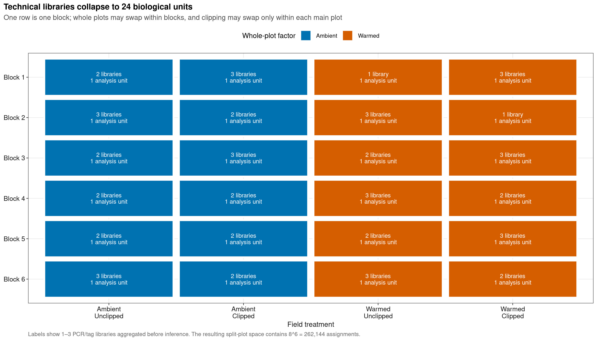
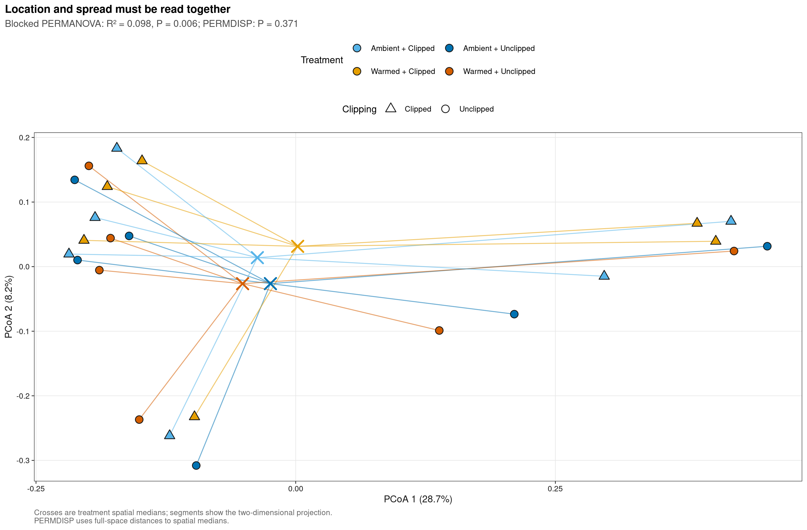
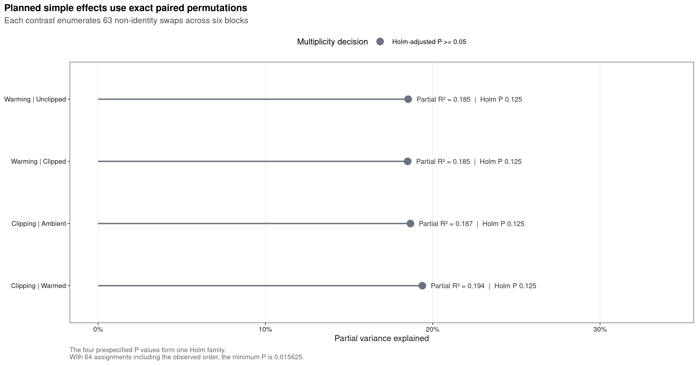
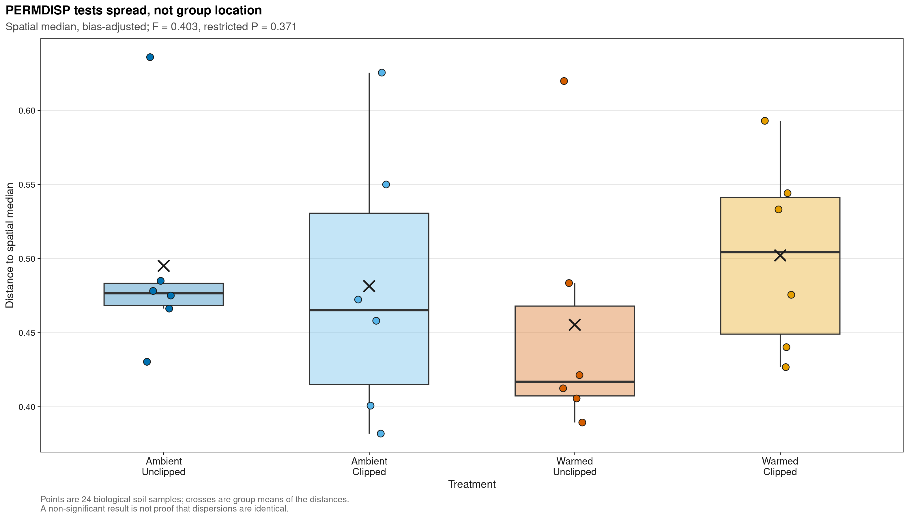

options(timeout = 600)
data_url <- "https://raw.githubusercontent.com/petemeng/microbiome-best-practices/3cb6a817e0c73ab7ecbec1cedc1ad80cbb9ecfaa/"
input_files <- c(
"data/small/permanova-dispersion/metadata.tsv",
"data/small/permanova-dispersion/otutab.tsv",
"data/small/permanova-dispersion/source-summary.json",
"data/small/permanova-dispersion/taxonomy.tsv"
)
for (path in input_files) {
dir.create(dirname(path), recursive = TRUE, showWarnings = FALSE)
if (!file.exists(path)) download.file(paste0(data_url, path), path, mode = "wb", quiet = TRUE)
}PERMANOVA + betadisper（必配）+ ANOSIM/MRPP
PERMANOVA 必须与离散度检验一起解释
PERMANOVA 常对应论文中的 PCoA/NMDS 分组图和一张含 pseudo-F、(R^2)、P 值的统计表。真正需要回答的不是“彩色点是否看起来分开”，而是：
- 组间群落中心位置是否不同；
- 观察到的差异是否可能来自组内离散程度不同；
- 置换有没有保持配对、区组、whole plot 和技术重复结构；
- 结果对 feature filter、实验单位和置换方案是否稳健。
本例使用 phyloseq 1.48.0 分发的真实 soilrep 数据，来源于长期增温 × 剪草草地实验。Zhou et al. (2011)采用 6 个区组的 paired nested/split-plot 设计，并用多标签扩增测序研究方法重复性与处理响应。源对象保留 56 个 PCR/tag 文库，每个处理 14 个；这些文库对应 24 个生物学土壤样本，不能作为 56 个独立样本进入推断。
原研究 Figure 2 的预处理保留“在任一处理至少 4 个 tagged libraries 中检出”的 feature。本页预先沿用该阈值作为主分析，先把同一土壤样本的 1–3 个技术文库相加，再计算 relative-abundance Bray–Curtis；论文图不直接复制，而是从公开数据重绘实验单位、中心/离散度、计划比较和 PERMDISP 四张英文图。
重要先给结论
在研究锚定的 feature filter 和合法 split-plot 置换下，四水平 treatment omnibus PERMANOVA 的 total (R^2=0.0981)、block-adjusted partial (R^2=0.1847)、(P=0.0065)；区组本身解释 total (R^2=0.4689)。对应的 bias-adjusted spatial-median PERMDISP 为 (F=0.403)、(P=0.3714)，没有发现全局离散度差异。
这个信号不能简化成“所有处理比较都显著”。Warming、Clipping 与交互项的 Holm-adjusted P 分别为 0.132、0.120 和 0.120；四个计划 simple effects 的 Holm-adjusted P 均为 0.125。更重要的是，保留全部 16,825 个 feature、仍使用同一合法置换时，omnibus P 变为 0.7642。因而结论应写成：主预处理分支检测到条件性的整体位置差异，未见全局 dispersion 证据，但结果对 feature filter 敏感，不能宣称稳健而普遍的处理效应。
下载并读取本次分析的数据
需要 R，以及 digest、ggplot2、jsonlite、permute、ragg、readr、scales、svglite、vegan。本次使用用于分组比较的 count、taxonomy、metadata 三张表；样本表保留重复与区组信息。
在一个新建的文件夹中运行以下代码，下载文件后按文中的顺序继续分析：
library(digest)
library(ggplot2)
library(jsonlite)
library(permute)
library(readr)
library(scales)
library(vegan)
set.seed(20260723)
font_pub <- "sans"
pal_pub <- c(
blue = "#0072B2", orange = "#E69F00", green = "#009E73",
vermillion = "#D55E00", purple = "#CC79A7", sky = "#56B4E9",
yellow = "#F0E442", grey = "#6B7280"
)
scale_color_pub <- function(..., values = unname(pal_pub)) {
ggplot2::scale_color_manual(..., values = values)
}
scale_fill_pub <- function(..., values = unname(pal_pub)) {
ggplot2::scale_fill_manual(..., values = values)
}
theme_pub <- function(base_size = 10, base_family = font_pub) {
ggplot2::theme_bw(base_size = base_size, base_family = base_family) +
ggplot2::theme(
panel.grid.minor = ggplot2::element_blank(),
panel.grid.major = ggplot2::element_line(
colour = "#E6E6E6", linewidth = 0.25
),
axis.text = ggplot2::element_text(colour = "#1A1A1A"),
axis.title = ggplot2::element_text(colour = "#1A1A1A"),
axis.ticks = ggplot2::element_line(
colour = "#1A1A1A", linewidth = 0.3
),
plot.title.position = "plot",
plot.title = ggplot2::element_text(
face = "bold", size = ggplot2::rel(1.15)
),
plot.subtitle = ggplot2::element_text(colour = "#4D4D4D"),
plot.caption = ggplot2::element_text(colour = "#666666", hjust = 0),
strip.background = ggplot2::element_rect(
fill = "#F2F2F2", colour = "#B3B3B3", linewidth = 0.3
),
strip.text = ggplot2::element_text(face = "bold"),
legend.key = ggplot2::element_blank(),
legend.position = "top"
)
}
save_pub <- function(
plot, file_base, width = 89, height = 70, units = "mm",
dpi = 600, write_svg = TRUE, write_tiff = TRUE,
base_family = font_pub
) {
dir.create(dirname(file_base), recursive = TRUE, showWarnings = FALSE)
ggplot2::ggsave(
paste0(file_base, ".pdf"), plot,
width = width, height = height, units = units,
device = grDevices::cairo_pdf, family = base_family, bg = "white"
)
if (isTRUE(write_svg)) {
ggplot2::ggsave(
paste0(file_base, ".svg"), plot,
width = width, height = height, units = units,
device = svglite::svglite, bg = "white"
)
}
ggplot2::ggsave(
paste0(file_base, ".png"), plot,
width = width, height = height, units = units, dpi = dpi,
device = ragg::agg_png, bg = "white"
)
if (isTRUE(write_tiff)) {
ggplot2::ggsave(
paste0(file_base, ".tiff"), plot,
width = width, height = height, units = units, dpi = dpi,
device = ragg::agg_tiff, compression = "lzw", bg = "white"
)
}
invisible(plot)
}
format_p <- function(p) {
ifelse(is.na(p), "NA", ifelse(p < 0.001, "<0.001", sprintf("%.3f", p)))
}读取三件套并锁定数据身份
otutab 是 feature × technical library 的原始非负整数表。taxonomy 保留标准接口，但本数据源没有 rank annotations；metadata 明确给出技术文库所属的 biological sample、block、main plot 和处理。
read_keyed_tsv <- function(path) {
x <- readr::read_tsv(
path,
show_col_types = FALSE,
progress = FALSE,
name_repair = "minimal",
na = character()
)
ids <- as.character(x[[1L]])
stopifnot(!anyDuplicated(ids))
out <- as.data.frame(x[-1L], check.names = FALSE)
rownames(out) <- ids
out
}
input_paths <- c(
otutab = "data/small/permanova-dispersion/otutab.tsv",
taxonomy = "data/small/permanova-dispersion/taxonomy.tsv",
metadata = "data/small/permanova-dispersion/metadata.tsv",
source_summary = "data/small/permanova-dispersion/source-summary.json"
)
expected_sha256 <- c(
otutab = "de52dc7457f15f07776c216561803afd92782af7d6723ec93deb8dc0e932b900",
taxonomy = "599ed73e3d1f59bc2867782c58113100def184c3ebd2cab36286b2fc96dbaee0",
metadata = "5ebf2fd60582e1a0ef80fe20d251594bec3607df11d8bb74d0981236e03f982c",
source_summary = "0b7f7c5a6db0c3d9c09d9ae147ff926cb1ce8cbbed804290c074c088100e076d"
)
observed_sha256 <- vapply(
input_paths,
digest::digest,
character(1),
algo = "sha256",
serialize = FALSE,
file = TRUE
)
stopifnot(identical(observed_sha256, expected_sha256))
otutab_frame <- read_keyed_tsv(input_paths[["otutab"]])
taxonomy <- read_keyed_tsv(input_paths[["taxonomy"]])
metadata <- read_keyed_tsv(input_paths[["metadata"]])
source_summary <- jsonlite::read_json(
input_paths[["source_summary"]],
simplifyVector = TRUE
)
otutab <- matrix(
suppressWarnings(as.numeric(as.matrix(otutab_frame))),
nrow = nrow(otutab_frame),
ncol = ncol(otutab_frame),
dimnames = dimnames(otutab_frame)
)
feature_ids <- rownames(otutab)
library_ids <- colnames(otutab)
taxonomy <- taxonomy[feature_ids, , drop = FALSE]
metadata <- metadata[library_ids, , drop = FALSE]
stopifnot(
nrow(otutab) == 16825L,
ncol(otutab) == 56L,
sum(otutab) == 98022,
setequal(feature_ids, rownames(taxonomy)),
setequal(library_ids, rownames(metadata)),
all(is.finite(otutab)),
all(otutab >= 0),
all(otutab == floor(otutab)),
identical(
source_summary$source_sha256,
"47b25a0a033b794fca1db30ae6fdb68c55a44e6c4cd0d1be76788d1d77b51f36"
)
)
dim(otutab)
sum(otutab)
otutab[1:5, 1:5]
taxonomy[1:5, , drop = FALSE]
head(metadata)[1] 16825 56
[1] 98022
a_C026 a_C066 a_C070 a_C074 a_C075
OTU_R0 0 0 0 0 1
OTU_R1 3 0 7 3 2
OTU_R10 0 0 0 0 0
OTU_R100 0 1 2 1 0
OTU_R10000 0 0 0 0 0
Kingdom Phylum Class Order Family Genus Species
OTU_R0 NA NA NA NA NA NA NA
OTU_R1 NA NA NA NA NA NA NA
OTU_R10 NA NA NA NA NA NA NA
OTU_R100 NA NA NA NA NA NA NA
OTU_R10000 NA NA NA NA NA NA NA
TaxonomyStatus
OTU_R0 Not distributed with phyloseq::soilrep; not used in this analysis
OTU_R1 Not distributed with phyloseq::soilrep; not used in this analysis
OTU_R10 Not distributed with phyloseq::soilrep; not used in this analysis
OTU_R100 Not distributed with phyloseq::soilrep; not used in this analysis
OTU_R10000 Not distributed with phyloseq::soilrep; not used in this analysis
SourceTreatment SourceWarmed SourceClipped BiologicalSampleID Block
a_C026 UC no yes 6CC Block 6
a_C066 UU no no 3UC Block 3
a_C070 WU yes no 5UW Block 5
a_C074 UU no no 2UC Block 2
a_C075 WC yes yes 5CW Block 5
a_C077 WU yes no 4UW Block 4
MainPlot Warming Clipping Treatment
a_C026 Block 6 / Ambient Ambient Clipped Ambient + Clipped
a_C066 Block 3 / Ambient Ambient Unclipped Ambient + Unclipped
a_C070 Block 5 / Warmed Warmed Unclipped Warmed + Unclipped
a_C074 Block 2 / Ambient Ambient Unclipped Ambient + Unclipped
a_C075 Block 5 / Warmed Warmed Clipped Warmed + Clipped
a_C077 Block 4 / Warmed Warmed Unclipped Warmed + Unclipped
TechnicalLibraryIndex TechnicalLibraryCount
a_C026 1 2
a_C066 1 2
a_C070 1 2
a_C074 1 3
a_C075 1 3
a_C077 1 3下载完整 R 脚本。脚本包含数据下载、计算和图形导出。
首次使用时安装 R 包
install.packages(c(
"BiocManager", "digest", "ggplot2", "jsonlite", "permute",
"ragg", "readr", "scales", "svglite", "systemfonts", "vegan"
))
BiocManager::install(version = "3.19", ask = FALSE)
BiocManager::install("phyloseq", version = "3.19", ask = FALSE)PERMANOVA 与 PERMDISP 回答不同问题
先区分组间中心差异与组内离散程度
PERMANOVA 把距离矩阵中的平方和分解到模型项，比较组中心位置相关的 explained variation；常见输出是 pseudo-F、(R^2) 和 permutation P value。PERMDISP 则把每个样本到所属组 spatial median 或 centroid 的距离作为响应，检验各组 spread 是否不同。
两者必须一起读：
| PERMANOVA | PERMDISP | 可支持的表述 |
|---|---|---|
| 显著 | 不显著 | 与组中心位置差异一致，但仍需看设计、效应量和敏感性 |
| 显著 | 显著 | location 与 dispersion 混在一起，不能只写“群落组成不同” |
| 不显著 | 显著 | 没有中心差异证据，但 spread 不同本身可能有生物学意义 |
| 不显著 | 不显著 | 当前精度下两类检验都未拒绝原假设，不等于各组完全相同 |
Warton et al. (2012)系统说明了 distance-based multivariate tests 中 location 与 dispersion 的混淆风险。betadisper(type = "median", bias.adjust = TRUE)在本例中提供与主距离相配套的 spread 检验；二维 PCoA 只用于展示，推断仍使用完整距离空间。
实验单位先于置换次数
本数据有四层结构：
6 Blocks
└── 2 Main plots per block: Ambient / Warmed
└── 2 Subplots per main plot: Unclipped / Clipped
└── 1 biological soil sample
└── 1–3 PCR/tag technical libraries因此每个区组有 8 种合法 treatment relabellings：whole-plot warming 可交换一次，两个 main plot 内的 clipping 可各交换一次，即 (2^3=8)。六个区组共有：
[ 8^6=262{,}144 ]
种合法 assignments（包含观察到的 identity）。主分析从其余 262,143 个 assignments 中以固定种子无放回抽取 9,999 个。置换 P 值按
[ P= ]
计算，因此 9,999 次置换的最小 P 为 0.0001。四个 planned simple effects 各有 6 对区组配对，穷举 63 个 non-identity swaps；连同观察顺序后，最小 P 为 (1/64=0.015625)。
警告只写 strata = Block 仍可能不够
strata = Block只能阻止样本跨区组交换，不能自动表达 whole plot 与 subplot 的不同交换规则。复杂 split-plot、crossover、family/cage 或纵向设计必须从随机化方案反推 exchangeability；若随机化记录不清楚，应先补设计合同，而不是增加置换次数。
total R²、partial R² 与 P 值不能互换
本页同时报告两种比例：
- total (R^2)：某项平方和占全部距离平方和的比例；
- partial (R^2)：某项平方和占“该项 + residual”平方和的比例，即在先吸收 block 后的条件尺度。
P 值还受到可交换单位数、置换空间和样本量影响。小 P 不代表效应大，大 (R^2) 也不保证估计精确。这里区组 total (R^2=0.469) 远大于 treatment total (R^2=0.098)，正说明设计结构不是可忽略的代码选项。
深入：ANOSIM 和 MRPP 为什么只能做次要敏感性分析
ANOSIM 比较 between-group 与 within-group 距离秩，统计量 (R>0) 才与“组内更近、组间更远”的常规分离方向一致。MRPP 的 chance-corrected agreement (A>0) 表示组内一致性高于随机期望。二者的统计量不等同于 PERMANOVA (R^2)，也不能替代 location/dispersion 分解。
本例用同一受限置换矩阵得到 ANOSIM (R=-0.0948, P=0.0066) 和 MRPP (A=-0.0200, P=0.0122)。小 P 伴随负方向，表示观察到的组内相似性并没有沿常规“组内更近”的方向增强。把这两个 P 值列为“又有两种方法验证显著”会倒置统计量含义；本页只把它们保存为诊断性 sensitivity outputs。
同时检验群落中心与组内离散度
把技术文库聚合回 24 个实验单位
同一 BiologicalSampleID 下的技术文库共享同一处理标签，因而无法提供独立的 treatment replication。计数应先相加；对技术文库求平均 relative abundance 会让 1、2、3 个文库的土壤样本获得不同隐含权重。
treatment_levels <- c(
"Ambient + Unclipped", "Ambient + Clipped",
"Warmed + Unclipped", "Warmed + Clipped"
)
metadata$Block <- factor(metadata$Block, levels = paste("Block", 1:6))
metadata$Warming <- factor(metadata$Warming, levels = c("Ambient", "Warmed"))
metadata$Clipping <- factor(metadata$Clipping, levels = c("Unclipped", "Clipped"))
metadata$Treatment <- factor(metadata$Treatment, levels = treatment_levels)
biological_ids <- unique(as.character(metadata$BiologicalSampleID))
biological_meta <- do.call(rbind, lapply(biological_ids, function(id) {
rows <- metadata$BiologicalSampleID == id
fields <- c("Block", "MainPlot", "Warming", "Clipping", "Treatment")
stopifnot(all(vapply(metadata[rows, fields, drop = FALSE], function(x) {
length(unique(as.character(x))) == 1L
}, logical(1))))
data.frame(
BiologicalSampleID = id,
Block = as.character(metadata$Block[rows][[1L]]),
MainPlot = as.character(metadata$MainPlot[rows][[1L]]),
Warming = as.character(metadata$Warming[rows][[1L]]),
Clipping = as.character(metadata$Clipping[rows][[1L]]),
Treatment = as.character(metadata$Treatment[rows][[1L]]),
TechnicalLibraries = sum(rows),
AggregateReads = sum(otutab[, rows, drop = FALSE]),
stringsAsFactors = FALSE
)
}))
biological_meta$Block <- factor(
biological_meta$Block, levels = paste("Block", 1:6)
)
biological_meta$Warming <- factor(
biological_meta$Warming, levels = c("Ambient", "Warmed")
)
biological_meta$Clipping <- factor(
biological_meta$Clipping, levels = c("Unclipped", "Clipped")
)
biological_meta$Treatment <- factor(
biological_meta$Treatment, levels = treatment_levels
)
biological_meta <- biological_meta[
order(biological_meta$Block, biological_meta$Warming, biological_meta$Clipping),
, drop = FALSE
]
rownames(biological_meta) <- biological_meta$BiologicalSampleID
biological_ids <- rownames(biological_meta)
aggregate_counts <- vapply(biological_ids, function(id) {
rowSums(otutab[, metadata$BiologicalSampleID == id, drop = FALSE])
}, numeric(nrow(otutab)))
rownames(aggregate_counts) <- feature_ids
colnames(aggregate_counts) <- biological_ids
stopifnot(
ncol(aggregate_counts) == 24L,
sum(aggregate_counts) == sum(otutab),
all(with(biological_meta, table(Block, Warming, Clipping)) == 1L),
identical(as.integer(range(biological_meta$TechnicalLibraries)), c(1L, 3L))
)
design_audit <- data.frame(
BiologicalSampleID = biological_meta$BiologicalSampleID,
Block = as.character(biological_meta$Block),
MainPlot = biological_meta$MainPlot,
Warming = as.character(biological_meta$Warming),
Clipping = as.character(biological_meta$Clipping),
Treatment = as.character(biological_meta$Treatment),
TechnicalLibraries = biological_meta$TechnicalLibraries,
AggregateReads = biological_meta$AggregateReads,
stringsAsFactors = FALSE
)
design_audit BiologicalSampleID Block MainPlot Warming Clipping
1 1UC Block 1 Block 1 / Ambient Ambient Unclipped
2 1CC Block 1 Block 1 / Ambient Ambient Clipped
3 1UW Block 1 Block 1 / Warmed Warmed Unclipped
4 1CW Block 1 Block 1 / Warmed Warmed Clipped
5 2UC Block 2 Block 2 / Ambient Ambient Unclipped
6 2CC Block 2 Block 2 / Ambient Ambient Clipped
7 2UW Block 2 Block 2 / Warmed Warmed Unclipped
8 2CW Block 2 Block 2 / Warmed Warmed Clipped
9 3UC Block 3 Block 3 / Ambient Ambient Unclipped
10 3CC Block 3 Block 3 / Ambient Ambient Clipped
11 3UW Block 3 Block 3 / Warmed Warmed Unclipped
12 3CW Block 3 Block 3 / Warmed Warmed Clipped
13 4UC Block 4 Block 4 / Ambient Ambient Unclipped
14 4CC Block 4 Block 4 / Ambient Ambient Clipped
15 4UW Block 4 Block 4 / Warmed Warmed Unclipped
16 4CW Block 4 Block 4 / Warmed Warmed Clipped
17 5UC Block 5 Block 5 / Ambient Ambient Unclipped
18 5CC Block 5 Block 5 / Ambient Ambient Clipped
19 5UW Block 5 Block 5 / Warmed Warmed Unclipped
20 5CW Block 5 Block 5 / Warmed Warmed Clipped
21 6UC Block 6 Block 6 / Ambient Ambient Unclipped
22 6CC Block 6 Block 6 / Ambient Ambient Clipped
23 6UW Block 6 Block 6 / Warmed Warmed Unclipped
24 6CW Block 6 Block 6 / Warmed Warmed Clipped
Treatment TechnicalLibraries AggregateReads
1 Ambient + Unclipped 2 2270
2 Ambient + Clipped 3 5343
3 Warmed + Unclipped 1 2314
4 Warmed + Clipped 3 5729
5 Ambient + Unclipped 3 9863
6 Ambient + Clipped 2 2192
7 Warmed + Unclipped 3 3801
8 Warmed + Clipped 1 1564
9 Ambient + Unclipped 2 3154
10 Ambient + Clipped 3 8300
11 Warmed + Unclipped 2 3342
12 Warmed + Clipped 3 5280
13 Ambient + Unclipped 2 3061
14 Ambient + Clipped 2 2578
15 Warmed + Unclipped 3 5155
16 Warmed + Clipped 2 2817
17 Ambient + Unclipped 2 2971
18 Ambient + Clipped 2 2881
19 Warmed + Unclipped 2 3877
20 Warmed + Clipped 3 5746
21 Ambient + Unclipped 3 5188
22 Ambient + Clipped 2 2613
23 Warmed + Unclipped 3 6138
24 Warmed + Clipped 2 1845预先固定 feature filter 和主距离
主 filter 在技术文库层复现原研究规则；推断距离在聚合后的生物学样本层计算。两层不能交换顺序。
presence_by_treatment <- vapply(treatment_levels, function(group) {
rowSums(otutab[, metadata$Treatment == group, drop = FALSE] > 0)
}, numeric(nrow(otutab)))
colnames(presence_by_treatment) <- treatment_levels
primary_keep <- apply(presence_by_treatment >= 4L, 1L, any)
primary_counts <- aggregate_counts[primary_keep, , drop = FALSE]
primary_community <- t(primary_counts)
primary_relative <- sweep(
primary_community, 1L, rowSums(primary_community), "/"
)
primary_distance <- vegan::vegdist(primary_relative, method = "bray")
distance_matrix <- as.matrix(primary_distance)
stopifnot(
sum(primary_keep) == 1824L,
max(abs(rowSums(primary_relative) - 1)) < 1e-12,
max(abs(distance_matrix - t(distance_matrix))) < 1e-12,
max(abs(diag(distance_matrix))) < 1e-12,
identical(rownames(distance_matrix), biological_ids)
)
data.frame(
Branch = c(
"Primary: detected in >=4 tagged libraries in any treatment",
"Sensitivity: no prevalence filter"
),
InputFeatures = nrow(otutab),
RetainedFeatures = c(sum(primary_keep), nrow(otutab)),
UsedForPrimaryInference = c(TRUE, FALSE)
) Branch InputFeatures
1 Primary: detected in >=4 tagged libraries in any treatment 16825
2 Sensitivity: no prevalence filter 16825
RetainedFeatures UsedForPrimaryInference
1 1824 TRUE
2 16825 FALSE明确生成合法 split-plot 置换矩阵
make_splitplot_permutations()为每个区组编码三个二元交换：whole plot 一次、两个 main plot 内各一次。permute::how()在这里作为独立的置换空间计数审计；真正传给 adonis2() 和 permutest()的是显式矩阵。
make_splitplot_permutations <- function(meta, nset, seed) {
block_levels <- levels(meta$Block)
total_possible <- 8^length(block_levels)
stopifnot(nset <= total_possible - 1L)
set.seed(seed)
codes <- sample.int(total_possible - 1L, nset, replace = FALSE)
permutations <- matrix(
rep(seq_len(nrow(meta)), each = nset),
nrow = nset,
byrow = FALSE
)
for (row_i in seq_len(nset)) {
code <- codes[[row_i]]
for (block_i in seq_along(block_levels)) {
state <- code %% 8L
code <- code %/% 8L
destination <- which(meta$Block == block_levels[[block_i]])
ambient <- destination[meta$Warming[destination] == "Ambient"]
warmed <- destination[meta$Warming[destination] == "Warmed"]
ambient <- ambient[order(meta$Clipping[ambient])]
warmed <- warmed[order(meta$Clipping[warmed])]
if (bitwAnd(state, 2L) != 0L) ambient <- rev(ambient)
if (bitwAnd(state, 4L) != 0L) warmed <- rev(warmed)
source <- if (bitwAnd(state, 1L) != 0L) {
c(warmed, ambient)
} else {
c(ambient, warmed)
}
permutations[row_i, destination] <- source
}
}
list(matrix = permutations, codes = codes, possible = total_possible)
}
is_legal_splitplot <- function(permutation, meta) {
for (block_level in levels(meta$Block)) {
destination <- which(meta$Block == block_level)
source <- permutation[destination]
if (!all(meta$Block[source] == block_level)) return(FALSE)
destination_ambient <- destination[meta$Warming[destination] == "Ambient"]
destination_warmed <- destination[meta$Warming[destination] == "Warmed"]
source_plot_a <- unique(as.character(
meta$MainPlot[permutation[destination_ambient]]
))
source_plot_w <- unique(as.character(
meta$MainPlot[permutation[destination_warmed]]
))
if (length(source_plot_a) != 1L || length(source_plot_w) != 1L) {
return(FALSE)
}
if (identical(source_plot_a, source_plot_w)) return(FALSE)
if (!setequal(
meta$Clipping[permutation[destination_ambient]],
levels(meta$Clipping)
)) return(FALSE)
if (!setequal(
meta$Clipping[permutation[destination_warmed]],
levels(meta$Clipping)
)) return(FALSE)
}
TRUE
}
primary_seed <- 20260723L
primary_nperm <- 9999L
splitplot <- make_splitplot_permutations(
biological_meta, primary_nperm, primary_seed
)
permutation_matrix <- splitplot$matrix
control_design <- permute::how(
blocks = biological_meta$Block,
plots = permute::Plots(
strata = factor(biological_meta$MainPlot),
type = "free"
),
within = permute::Within(type = "free"),
nperm = primary_nperm
)
possible_from_permute <- permute::numPerms(
nrow(biological_meta), control = control_design
)
identity_rows <- sum(apply(permutation_matrix, 1L, function(x) {
identical(as.integer(x), seq_len(nrow(biological_meta)))
}))
legal_rows <- vapply(seq_len(nrow(permutation_matrix)), function(i) {
is_legal_splitplot(permutation_matrix[i, ], biological_meta)
}, logical(1))
permutation_contract <- data.frame(
Seed = primary_seed,
PossibleIncludingIdentity = splitplot$possible,
PossibleFromPermute = possible_from_permute,
PermutationsUsed = nrow(permutation_matrix),
UniqueRows = nrow(unique(permutation_matrix)),
IdentityRows = identity_rows,
LegalRows = sum(legal_rows),
MinimumP = 1 / (primary_nperm + 1),
MatrixSHA256 = digest(
permutation_matrix, algo = "sha256", serialize = TRUE
)
)
stopifnot(
splitplot$possible == 262144,
possible_from_permute == 262144,
nrow(unique(permutation_matrix)) == 9999L,
identity_rows == 0L,
all(legal_rows)
)
permutation_contract Seed PossibleIncludingIdentity PossibleFromPermute PermutationsUsed
1 20260723 262144 262144 9999
UniqueRows IdentityRows LegalRows MinimumP
1 9999 0 9999 1e-04
MatrixSHA256
1 3b135bcf5075a2dc0c8bb0d331683be1bd5d98d53811f2d42fd65eda1cabf427分别进行整体分组检验与多因素 PERMANOVA
Block先进入模型以吸收区组差异；四水平 Treatment 是预先指定的 primary omnibus。factorial decomposition 用于描述 Warming、Clipping 与 interaction，并把三个 P 值作为一个 Holm family。
set.seed(primary_seed)
omnibus_fit <- vegan::adonis2(
primary_distance ~ Block + Treatment,
data = biological_meta,
permutations = permutation_matrix,
by = "terms",
parallel = 1
)
omnibus_ss <- omnibus_fit["Treatment", "SumOfSqs"]
omnibus_residual_ss <- omnibus_fit["Residual", "SumOfSqs"]
permanova_omnibus <- data.frame(
Term = "Treatment (4 levels)",
Df = omnibus_fit["Treatment", "Df"],
SumOfSquares = omnibus_ss,
ConditioningBlockR2 = omnibus_fit["Block", "R2"],
R2Total = omnibus_fit["Treatment", "R2"],
R2Partial = omnibus_ss / (omnibus_ss + omnibus_residual_ss),
PseudoF = omnibus_fit["Treatment", "F"],
PValue = omnibus_fit["Treatment", "Pr(>F)"],
Permutations = primary_nperm,
MinimumP = 1 / (primary_nperm + 1)
)
set.seed(primary_seed)
factorial_fit <- vegan::adonis2(
primary_distance ~ Block + Warming * Clipping,
data = biological_meta,
permutations = permutation_matrix,
by = "terms",
parallel = 1
)
factorial_terms <- c("Warming", "Clipping", "Warming:Clipping")
factorial_residual_ss <- factorial_fit["Residual", "SumOfSqs"]
permanova_factorial <- data.frame(
Term = factorial_terms,
Df = factorial_fit[factorial_terms, "Df"],
SumOfSquares = factorial_fit[factorial_terms, "SumOfSqs"],
R2Total = factorial_fit[factorial_terms, "R2"],
R2Partial = factorial_fit[factorial_terms, "SumOfSqs"] /
(factorial_fit[factorial_terms, "SumOfSqs"] + factorial_residual_ss),
PseudoF = factorial_fit[factorial_terms, "F"],
PValue = factorial_fit[factorial_terms, "Pr(>F)"],
Permutations = primary_nperm
)
permanova_factorial$PAdjustedHolm <- p.adjust(
permanova_factorial$PValue, method = "holm"
)
permanova_factorial$RejectHolm05 <-
permanova_factorial$PAdjustedHolm < 0.05
permanova_omnibus
permanova_factorial Term Df SumOfSquares ConditioningBlockR2 R2Total R2Partial
1 Treatment (4 levels) 3 0.5176345 0.4689156 0.09808712 0.1846922
PseudoF PValue Permutations MinimumP
1 1.132653 0.0065 9999 1e-04
Term Df SumOfSquares R2Total R2Partial PseudoF PValue
1 Warming 1 0.1798562 0.03408114 0.07296664 1.180648 0.1320
2 Clipping 1 0.1677139 0.03178029 0.06837743 1.100941 0.0489
3 Warming:Clipping 1 0.1700644 0.03222569 0.06926934 1.116370 0.0400
Permutations PAdjustedHolm RejectHolm05
1 9999 0.132 FALSE
2 9999 0.120 FALSE
3 9999 0.120 FALSE
注记by = terms 的解释边界
adonis2(..., by = "terms")给出 sequential sums of squares。当前 2 × 2 balanced design 的 Warming、Clipping 与 interaction 平方和经换序核对一致；不平衡 observational metadata 中，项顺序可能改变结果，应预先确定模型、检查 marginal tests，并报告共线性和不可辨识项。
四个计划 simple effects：穷举区组内配对交换
每个 simple effect 都比较 12 个生物学样本、6 个 blocks。63 个 non-identity paired swaps 全部进入检验，四个 P 值再作为一个 Holm family。
make_paired_permutations <- function(meta) {
block_levels <- levels(meta$Block)
permutations <- matrix(
rep(seq_len(nrow(meta)), each = 2^length(block_levels) - 1L),
nrow = 2^length(block_levels) - 1L,
byrow = FALSE
)
for (code in seq_len(2^length(block_levels) - 1L)) {
for (block_i in seq_along(block_levels)) {
if (bitwAnd(code, bitwShiftL(1L, block_i - 1L)) != 0L) {
destination <- which(meta$Block == block_levels[[block_i]])
permutations[code, destination] <- rev(destination)
}
}
}
permutations
}
planned_contrasts <- list(
list(
label = "Warming | Unclipped",
group_a = "Ambient + Unclipped",
group_b = "Warmed + Unclipped"
),
list(
label = "Warming | Clipped",
group_a = "Ambient + Clipped",
group_b = "Warmed + Clipped"
),
list(
label = "Clipping | Ambient",
group_a = "Ambient + Unclipped",
group_b = "Ambient + Clipped"
),
list(
label = "Clipping | Warmed",
group_a = "Warmed + Unclipped",
group_b = "Warmed + Clipped"
)
)
pairwise_rows <- vector("list", length(planned_contrasts))
for (contrast_i in seq_along(planned_contrasts)) {
contrast <- planned_contrasts[[contrast_i]]
keep_samples <- biological_meta$Treatment %in%
c(contrast$group_a, contrast$group_b)
pair_meta <- biological_meta[keep_samples, , drop = FALSE]
pair_meta$ContrastGroup <- factor(
as.character(pair_meta$Treatment),
levels = c(contrast$group_a, contrast$group_b)
)
pair_meta <- pair_meta[
order(pair_meta$Block, pair_meta$ContrastGroup),
, drop = FALSE
]
pair_distance <- as.dist(
distance_matrix[rownames(pair_meta), rownames(pair_meta), drop = FALSE]
)
pair_permutations <- make_paired_permutations(pair_meta)
set.seed(primary_seed + contrast_i)
pair_fit <- vegan::adonis2(
pair_distance ~ Block + ContrastGroup,
data = pair_meta,
permutations = pair_permutations,
by = "terms",
parallel = 1
)
pair_ss <- pair_fit["ContrastGroup", "SumOfSqs"]
pair_residual_ss <- pair_fit["Residual", "SumOfSqs"]
pairwise_rows[[contrast_i]] <- data.frame(
Contrast = contrast$label,
GroupA = contrast$group_a,
GroupB = contrast$group_b,
Samples = nrow(pair_meta),
Blocks = nlevels(droplevels(pair_meta$Block)),
R2Total = pair_fit["ContrastGroup", "R2"],
R2Partial = pair_ss / (pair_ss + pair_residual_ss),
PseudoF = pair_fit["ContrastGroup", "F"],
PValue = pair_fit["ContrastGroup", "Pr(>F)"],
Permutations = nrow(pair_permutations),
MinimumP = 1 / (nrow(pair_permutations) + 1)
)
}
pairwise_permanova <- do.call(rbind, pairwise_rows)
pairwise_permanova$PAdjustedHolm <- p.adjust(
pairwise_permanova$PValue, method = "holm"
)
pairwise_permanova$RejectHolm05 <-
pairwise_permanova$PAdjustedHolm < 0.05
pairwise_permanova Contrast GroupA GroupB Samples Blocks
1 Warming | Unclipped Ambient + Unclipped Warmed + Unclipped 12 6
2 Warming | Clipped Ambient + Clipped Warmed + Clipped 12 6
3 Clipping | Ambient Ambient + Unclipped Ambient + Clipped 12 6
4 Clipping | Warmed Warmed + Unclipped Warmed + Clipped 12 6
R2Total R2Partial PseudoF PValue Permutations MinimumP PAdjustedHolm
1 0.06856475 0.1853007 1.137234 0.03125 63 0.015625 0.125
2 0.06840673 0.1850233 1.135145 0.03125 63 0.015625 0.125
3 0.06236555 0.1866763 1.147614 0.06250 63 0.015625 0.125
4 0.07027971 0.1937671 1.201682 0.03125 63 0.015625 0.125
RejectHolm05
1 FALSE
2 FALSE
3 FALSE
4 FALSE必配 PERMDISP，并保留 ANOSIM/MRPP 的方向
PERMDISP 使用与 primary PERMANOVA 完全相同的 Bray–Curtis 和 9,999 行合法置换矩阵。type = "median"降低 centroid 对极端点的敏感性；bias.adjust = TRUE修正小组样本量下到中心距离的向下偏差。
dispersion_model <- vegan::betadisper(
primary_distance,
group = biological_meta$Treatment,
type = "median",
bias.adjust = TRUE
)
set.seed(primary_seed)
dispersion_test <- vegan::permutest(
dispersion_model,
permutations = permutation_matrix,
pairwise = FALSE,
parallel = 1
)
dispersion_global <- data.frame(
Grouping = "Treatment (4 levels)",
Center = "Spatial median",
BiasAdjustment = TRUE,
FValue = dispersion_test$tab["Groups", "F"],
PValue = dispersion_test$tab["Groups", "Pr(>F)"],
Permutations = dispersion_test$tab["Groups", "N.Perm"],
MinimumP = 1 / (primary_nperm + 1)
)
dispersion_distances <- data.frame(
BiologicalSampleID = names(dispersion_model$distances),
Treatment = as.character(biological_meta[
names(dispersion_model$distances), "Treatment"
]),
DistanceToSpatialMedian = as.numeric(dispersion_model$distances)
)
set.seed(primary_seed)
anosim_fit <- vegan::anosim(
primary_distance,
grouping = biological_meta$Treatment,
permutations = permutation_matrix,
parallel = 1
)
set.seed(primary_seed)
mrpp_fit <- vegan::mrpp(
primary_distance,
grouping = biological_meta$Treatment,
permutations = permutation_matrix,
weight.type = 1,
parallel = 1
)
alternative_tests <- data.frame(
Method = c("PERMANOVA", "ANOSIM", "MRPP"),
Statistic = c("Pseudo-F", "R", "A"),
StatisticValue = c(
permanova_omnibus$PseudoF,
unname(anosim_fit$statistic),
unname(mrpp_fit$A)
),
PValue = c(
permanova_omnibus$PValue,
anosim_fit$signif,
mrpp_fit$Pvalue
),
Role = c("Primary", "Directional sensitivity", "Directional sensitivity")
)
dispersion_global
alternative_tests Grouping Center BiasAdjustment FValue PValue
1 Treatment (4 levels) Spatial median TRUE 0.4027608 0.3714
Permutations MinimumP
1 9999 1e-04
Method Statistic StatisticValue PValue Role
1 PERMANOVA Pseudo-F 1.13265290 0.0065 Primary
2 ANOSIM R -0.09475309 0.0066 Directional sensitivity
3 MRPP A -0.02004802 0.0122 Directional sensitivity做两条有效和两条故意无效的敏感性分支
第一条敏感性分支只改变 feature filter，仍可用于评估结论稳健性。后两条故意打破 exchangeability 或实验单位，用于量化“错误分析会把结果改成什么”，但不能作为平行证据。
make_free_permutations <- function(n, nset, seed) {
set.seed(seed)
out <- t(replicate(nset, sample.int(n), simplify = "matrix"))
stopifnot(nrow(unique(out)) == nset)
out
}
run_omnibus <- function(distance, meta, permutations, include_block = TRUE) {
if (include_block) {
fit <- vegan::adonis2(
distance ~ Block + Treatment,
data = meta, permutations = permutations,
by = "terms", parallel = 1
)
} else {
fit <- vegan::adonis2(
distance ~ Treatment,
data = meta, permutations = permutations,
by = "terms", parallel = 1
)
}
ss <- fit["Treatment", "SumOfSqs"]
residual_ss <- fit["Residual", "SumOfSqs"]
c(
R2Total = fit["Treatment", "R2"],
R2Partial = ss / (ss + residual_ss),
PseudoF = fit["Treatment", "F"],
PValue = fit["Treatment", "Pr(>F)"]
)
}
unfiltered_relative <- sweep(
t(aggregate_counts), 1L, rowSums(t(aggregate_counts)), "/"
)
unfiltered_distance <- vegan::vegdist(
unfiltered_relative, method = "bray"
)
unfiltered_result <- run_omnibus(
unfiltered_distance, biological_meta, permutation_matrix, TRUE
)
free_biological_permutations <- make_free_permutations(
nrow(biological_meta), primary_nperm, primary_seed + 1L
)
free_biological_result <- run_omnibus(
primary_distance, biological_meta, free_biological_permutations, TRUE
)
library_relative <- sweep(
t(otutab[primary_keep, , drop = FALSE]),
1L,
colSums(otutab[primary_keep, , drop = FALSE]),
"/"
)
library_distance <- vegan::vegdist(library_relative, method = "bray")
free_library_permutations <- make_free_permutations(
nrow(metadata), primary_nperm, primary_seed + 2L
)
technical_result <- run_omnibus(
library_distance, metadata, free_library_permutations, FALSE
)
sensitivity_analysis <- data.frame(
Branch = c(
"Paper filter + split-plot restriction",
"No prevalence filter + split-plot restriction",
"Paper filter + unrestricted biological units",
"Paper filter + unrestricted technical libraries"
),
Features = c(sum(primary_keep), nrow(otutab), sum(primary_keep), sum(primary_keep)),
Units = c(24L, 24L, 24L, 56L),
ValidForPrimaryInference = c(TRUE, TRUE, FALSE, FALSE),
R2Total = c(
permanova_omnibus$R2Total,
unfiltered_result[["R2Total"]],
free_biological_result[["R2Total"]],
technical_result[["R2Total"]]
),
R2Partial = c(
permanova_omnibus$R2Partial,
unfiltered_result[["R2Partial"]],
free_biological_result[["R2Partial"]],
technical_result[["R2Partial"]]
),
PseudoF = c(
permanova_omnibus$PseudoF,
unfiltered_result[["PseudoF"]],
free_biological_result[["PseudoF"]],
technical_result[["PseudoF"]]
),
PValue = c(
permanova_omnibus$PValue,
unfiltered_result[["PValue"]],
free_biological_result[["PValue"]],
technical_result[["PValue"]]
)
)
sensitivity_analysis Branch Features Units
1 Paper filter + split-plot restriction 1824 24
2 No prevalence filter + split-plot restriction 16825 24
3 Paper filter + unrestricted biological units 1824 24
4 Paper filter + unrestricted technical libraries 1824 56
ValidForPrimaryInference R2Total R2Partial PseudoF PValue
1 TRUE 0.09808712 0.18469216 1.1326529 0.0065
2 TRUE 0.10283030 0.16355756 0.9776977 0.7642
3 FALSE 0.09808712 0.18469216 1.1326529 0.2441
4 FALSE 0.05872515 0.05872515 1.0814085 0.2480主 filter 与不做 prevalence filter 的 total (R^2) 接近，但受限置换 P 值从 0.0065 变为 0.7642。说明“排序图大致相似”不能替代推断稳健性；feature space 改变了在合法随机化分布中的相对位置。
把设计、效应量和离散度放在一起解释
先把随机化单位画清楚
每个格子是一个生物学土壤样本；格内数字显示它由多少 technical libraries 聚合而来。图内只使用英文，处理以颜色和文字同时编码。
treatment_palette <- c(
"Ambient + Unclipped" = pal_pub[["blue"]],
"Ambient + Clipped" = pal_pub[["sky"]],
"Warmed + Unclipped" = pal_pub[["vermillion"]],
"Warmed + Clipped" = pal_pub[["orange"]]
)
warming_palette <- c(
"Ambient" = pal_pub[["blue"]],
"Warmed" = pal_pub[["vermillion"]]
)
clipping_shapes <- c("Unclipped" = 21, "Clipped" = 24)
design_plot_data <- design_audit
design_plot_data$Block <- factor(
design_plot_data$Block, levels = rev(paste("Block", 1:6))
)
design_plot_data$Treatment <- factor(
design_plot_data$Treatment, levels = treatment_levels
)
design_plot_data$Warming <- factor(
design_plot_data$Warming, levels = c("Ambient", "Warmed")
)
design_plot_data$CellLabel <- paste0(
design_plot_data$TechnicalLibraries,
ifelse(design_plot_data$TechnicalLibraries == 1L, " library", " libraries"),
"\n1 analysis unit"
)
design_plot <- ggplot(
design_plot_data, aes(Treatment, Block, fill = Warming)
) +
geom_tile(
colour = "white", linewidth = 1.1, width = 0.96, height = 0.92
) +
geom_text(
aes(label = CellLabel), colour = "white", size = 2.65,
lineheight = 0.9, family = font_pub
) +
scale_fill_manual(values = warming_palette, drop = FALSE) +
scale_x_discrete(labels = c(
"Ambient + Unclipped" = "Ambient\nUnclipped",
"Ambient + Clipped" = "Ambient\nClipped",
"Warmed + Unclipped" = "Warmed\nUnclipped",
"Warmed + Clipped" = "Warmed\nClipped"
)) +
labs(
title = "Technical libraries collapse to 24 biological units",
subtitle = paste(
"One row is one block; whole plots may swap within blocks,",
"and clipping may swap only within each main plot"
),
x = "Field treatment", y = NULL, fill = "Whole-plot factor",
caption = paste(
"Labels show 1–3 PCR/tag libraries aggregated before inference.",
"The resulting split-plot space contains 8^6 = 262,144 assignments."
)
) +
theme_pub(base_size = 9) +
theme(
panel.grid = element_blank(),
axis.text.x = element_text(size = 8.3, lineheight = 0.9),
axis.text.y = element_text(size = 8.3),
legend.position = "top"
)
save_pub(
design_plot, "figures/23-exchangeability-design",
width = 183, height = 104
)
design_plot
同时展示群落中心差异与组内离散程度
彩色叉号是四组 spatial medians，线段是每个样本到所属 median 的二维投影。PERMDISP 实际使用完整坐标空间的距离，不能从二维线段长度重算。
site_vectors <- as.data.frame(
dispersion_model$vectors[, seq_len(2L), drop = FALSE]
)
colnames(site_vectors) <- c("PCoA1", "PCoA2")
site_vectors$BiologicalSampleID <- rownames(site_vectors)
site_vectors$Treatment <- as.character(biological_meta[
site_vectors$BiologicalSampleID, "Treatment"
])
site_vectors$Clipping <- as.character(biological_meta[
site_vectors$BiologicalSampleID, "Clipping"
])
center_vectors <- as.data.frame(
dispersion_model$centroids[, seq_len(2L), drop = FALSE]
)
colnames(center_vectors) <- c("Center1", "Center2")
center_vectors$Treatment <- rownames(center_vectors)
site_vectors$Center1 <- center_vectors$Center1[
match(site_vectors$Treatment, center_vectors$Treatment)
]
site_vectors$Center2 <- center_vectors$Center2[
match(site_vectors$Treatment, center_vectors$Treatment)
]
positive_eigenvalues <- dispersion_model$eig[dispersion_model$eig > 0]
axis_percent <- 100 * dispersion_model$eig[seq_len(2L)] /
sum(positive_eigenvalues)
pcoa_plot <- ggplot(site_vectors, aes(PCoA1, PCoA2)) +
geom_segment(
aes(xend = Center1, yend = Center2, colour = Treatment),
linewidth = 0.42, alpha = 0.55, show.legend = FALSE
) +
geom_point(
aes(fill = Treatment, shape = Clipping),
colour = "#1A1A1A", size = 3.0, stroke = 0.55
) +
geom_point(
data = center_vectors,
aes(Center1, Center2, colour = Treatment),
inherit.aes = FALSE, shape = 4, size = 4.2, stroke = 1.2,
show.legend = FALSE
) +
scale_fill_manual(values = treatment_palette, drop = FALSE) +
scale_colour_manual(values = treatment_palette, drop = FALSE) +
scale_shape_manual(values = clipping_shapes, drop = FALSE) +
labs(
title = "Location and spread must be read together",
subtitle = sprintf(
"Blocked PERMANOVA: R² = %.3f, P = %s; PERMDISP: P = %s",
permanova_omnibus$R2Total,
format_p(permanova_omnibus$PValue),
format_p(dispersion_global$PValue)
),
x = sprintf("PCoA 1 (%.1f%%)", axis_percent[[1L]]),
y = sprintf("PCoA 2 (%.1f%%)", axis_percent[[2L]]),
fill = "Treatment", shape = "Clipping",
caption = paste(
"Crosses are treatment spatial medians; segments show the two-dimensional projection.",
"PERMDISP uses full-space distances to spatial medians.",
sep = "\n"
)
) +
theme_pub(base_size = 9) +
theme(legend.position = "top", legend.box = "vertical") +
guides(
fill = guide_legend(
nrow = 2, byrow = TRUE,
override.aes = list(shape = 21, size = 3.0, colour = "#1A1A1A")
),
shape = guide_legend(nrow = 1)
)
save_pub(
pcoa_plot, "figures/23-pcoa-centroid-dispersion",
width = 183, height = 120
)
pcoa_plot
计划比较用效应量和校正后 P 值，不用星号墙
四个 partial (R^2) 约为 0.185–0.194，但离散的 exact permutation grid 和完整 Holm family 使校正后 P 均为 0.125。图同时显示 effect magnitude 与 multiplicity decision。
pairwise_plot_data <- pairwise_permanova
pairwise_plot_data$Contrast <- factor(
pairwise_plot_data$Contrast,
levels = rev(vapply(planned_contrasts, `[[`, character(1), "label"))
)
pairwise_plot_data$Decision <- ifelse(
pairwise_plot_data$RejectHolm05,
"Holm-adjusted P < 0.05",
"Holm-adjusted P >= 0.05"
)
pairwise_plot_data$Label <- sprintf(
"Partial R² = %.3f | Holm P %s",
pairwise_plot_data$R2Partial,
format_p(pairwise_plot_data$PAdjustedHolm)
)
pairwise_decision_palette <- c(
"Holm-adjusted P < 0.05" = pal_pub[["vermillion"]],
"Holm-adjusted P >= 0.05" = pal_pub[["grey"]]
)
pairwise_plot <- ggplot(
pairwise_plot_data, aes(R2Partial, Contrast, colour = Decision)
) +
geom_segment(
aes(x = 0, xend = R2Partial, yend = Contrast),
linewidth = 0.7, show.legend = FALSE
) +
geom_point(size = 3.2) +
geom_text(
aes(label = Label), hjust = -0.08, colour = "#333333",
size = 2.65, family = font_pub
) +
scale_colour_manual(values = pairwise_decision_palette) +
scale_x_continuous(
limits = c(0, max(pairwise_plot_data$R2Partial) * 1.75),
labels = scales::label_percent(accuracy = 1)
) +
labs(
title = "Planned simple effects use exact paired permutations",
subtitle = "Each contrast enumerates 63 non-identity swaps across six blocks",
x = "Partial variance explained", y = NULL,
colour = "Multiplicity decision",
caption = paste(
"The four prespecified P values form one Holm family.",
"With 64 assignments including the observed order, the minimum P is 0.015625.",
sep = "\n"
)
) +
theme_pub(base_size = 9) +
theme(panel.grid.major.y = element_blank(), legend.position = "top")
save_pub(
pairwise_plot, "figures/23-pairwise-permanova",
width = 183, height = 96
)
pairwise_plot
单独展示每个样本到 spatial median 的距离
箱体用于概括分布，全部 24 个点仍保留；黑色叉号表示组均值。未显著的 PERMDISP 不应改写为“方差齐性已被证明”。
dispersion_plot_data <- dispersion_distances
dispersion_plot_data$Treatment <- factor(
dispersion_plot_data$Treatment, levels = treatment_levels
)
dispersion_plot <- ggplot(
dispersion_plot_data,
aes(Treatment, DistanceToSpatialMedian, fill = Treatment)
) +
geom_boxplot(
width = 0.58, outlier.shape = NA, alpha = 0.35,
colour = "#333333", linewidth = 0.45
) +
geom_point(
shape = 21, colour = "#1A1A1A", size = 2.4, stroke = 0.45,
position = position_jitter(width = 0.09, height = 0, seed = primary_seed)
) +
stat_summary(
fun = mean, geom = "point", shape = 4, size = 3.4,
stroke = 1.0, colour = "#1A1A1A"
) +
scale_fill_manual(values = treatment_palette, guide = "none") +
scale_x_discrete(labels = c(
"Ambient + Unclipped" = "Ambient\nUnclipped",
"Ambient + Clipped" = "Ambient\nClipped",
"Warmed + Unclipped" = "Warmed\nUnclipped",
"Warmed + Clipped" = "Warmed\nClipped"
)) +
labs(
title = "PERMDISP tests spread, not group location",
subtitle = sprintf(
"Spatial median, bias-adjusted; F = %.3f, restricted P = %s",
dispersion_global$FValue, format_p(dispersion_global$PValue)
),
x = "Treatment", y = "Distance to spatial median",
caption = paste(
"Points are 24 biological soil samples; crosses are group means of the distances.",
"A non-significant result is not proof that dispersions are identical.",
sep = "\n"
)
) +
theme_pub(base_size = 9) +
theme(
panel.grid.major.x = element_blank(),
axis.text.x = element_text(size = 8.2, lineheight = 0.9)
)
save_pub(
dispersion_plot, "figures/23-dispersion-by-treatment",
width = 183, height = 104
)
dispersion_plot
四张主图均生成 PDF、SVG、600 ppi PNG 与 LZW-compressed TIFF。PDF/SVG 是排版主文件，PNG 适合网页与公众号，TIFF 用于要求高分辨率位图的投稿系统。
对完整分析做机器回验
验证器会重新读取三件套，核对输入 checksum、实验单位聚合、1,824-feature 主 filter、262,144 个合法 assignments、9,999 行唯一置换、omnibus/factorial/pairwise/PERMDISP/ANOSIM/MRPP、四条敏感性分支、字体和四种图形格式：
Rscript --vanilla scripts/validate_permanova_dispersion.R \
--project-root . \
--input-dir data/small/permanova-dispersion \
--output-dir results/23-permanova-dispersion \
--figure-dir figures审计结果存在时，下面代码要求 214 项全部通过；只使用前面的分析代码时不依赖该目录。
audit_summary_path <- paste0(
"results/23-permanova-dispersion/",
"permanova-dispersion-summary.json"
)
if (file.exists(audit_summary_path)) {
audit_summary <- jsonlite::read_json(
audit_summary_path, simplifyVector = TRUE
)
stopifnot(
audit_summary$checks_total == 214L,
audit_summary$checks_passed == 214L,
audit_summary$checks_failed == 0L,
audit_summary$dataset$features == 16825L,
audit_summary$dataset$technical_libraries == 56L,
audit_summary$dataset$biological_samples == 24L,
audit_summary$standardization$features_retained == 1824L,
audit_summary$permutations$possible == 262144L,
audit_summary$permutations$primary == 9999L,
audit_summary$analysis$factorial_rejections_holm == 0L,
audit_summary$analysis$pairwise_rejections_holm == 0L,
audit_summary$graphics$primary_figures == 4L,
audit_summary$graphics$format_files == 16L
)
unlist(audit_summary[c("checks_total", "checks_passed", "checks_failed")])
} checks_total checks_passed checks_failed
214 214 0 常见坑
注意审稿人最常追问的十件事
- 把 PCR、tag、测序 lane 或重复抽提当独立样本。 技术重复共享同一 treatment label，不能增加 biological replication。
- 只限制在 block 内自由置换。 split-plot 还要求 whole plot 整体交换、subplot 只在自己的 main plot 内交换。
- 报告 999 或 9,999 次置换，却不报告可交换单位。 如果只有 4 个 pair，理论 P 值网格不会因重复抽样变得无限精细。
- PERMANOVA 显著就停止。 必须同时报告 PERMDISP；显著 dispersion 会使 location 解释不唯一。
- 把 PERMDISP 不显著写成“方差相等”。 未拒绝原假设不等于证明完全一致，尤其在每组只有 6 个生物学样本时。
- 只报 P 值，不报 (R^2)。 P 值依赖样本量和置换空间；total/partial (R^2) 说明效应在什么分母上有多大。
- 看到 factorial raw P < 0.05 就挑一项写结论。 本例 Clipping 与 interaction 的 raw P 分别为 0.0489、0.0400，但同一三项 family 的 Holm P 都是 0.120。
- 总体显著后无限追加 pairwise PERMANOVA。 contrasts 与 multiplicity family 应在看结果前定义；本例四个计划比较没有一个通过 Holm。
- 把 ANOSIM/MRPP 的小 P 当作重复验证。 本例 (R) 与 (A) 都为负，方向与“组内更相似”相反。
- 根据哪个 filter 显著来选择 feature space。 主 filter 必须由测量与研究问题预先确定；完整表的受限 P = 0.7642 是必须保留的稳健性警告。
警告排序图不决定置换方案
PCoA 中点的颜色、椭圆和 hull 都不会告诉软件哪些标签可交换。exchangeability 只能来自随机化、采样和重复测量记录；缺少这份记录时，最漂亮的图也不能修复无效 P 值。
报告置换设计与群落差异的方法与限制
下面英文与本例实际代码和结果一致：
PCR/tag technical libraries were summed within each biological soil sample before inference, yielding 24 biological units arranged as a 2 × 2 warming-by-clipping split-plot experiment in six blocks. Features were prespecified for the primary analysis when detected in at least four tagged libraries in any one treatment, retaining 1,824 of 16,825 OTUs. Bray–Curtis dissimilarities were calculated from sample-wise relative abundances. The primary four-level treatment effect was tested with PERMANOVA after fitting block first. A seed-fixed set of 9,999 unique non-identity permutations was sampled without replacement from the 262,144 assignments allowed by the block, whole-plot, and within-main-plot randomization. Treatment explained 9.81% of total distance variation (partial R² = 18.47%; pseudo-F = 1.133; P = 0.0065), whereas block accounted for 46.89% of total variation. Warming, clipping, and their interaction were decomposed descriptively and adjusted as one three-test family using Holm’s procedure; no term remained significant. Four prespecified simple effects were tested using all 63 non-identity paired swaps across the six blocks and adjusted as one Holm family; no comparison met the adjusted 0.05 threshold. Multivariate dispersion was assessed on the same distance matrix using bias-adjusted distances to spatial medians and the same restricted permutation matrix (PERMDISP F = 0.403, P = 0.3714). ANOSIM and MRPP were retained only as directional sensitivity analyses. Repeating the valid restricted analysis without prevalence filtering changed the omnibus P value to 0.7642, so inference was treated as sensitive to feature filtering.
正式稿还要补充：每层随机化发生在何时、每个 biological sample 的定义、技术重复为何合并、样本排除、primary distance/filter 的预注册依据，以及是否还有 batch、site、subject 或时间结构。
将置换设计与群落差异用于自己的研究
只替换路径和 metadata 列名
input_paths <- c(
otutab = "your_project/otutab.tsv",
taxonomy = "your_project/taxonomy.tsv",
metadata = "your_project/metadata.tsv"
)
group_col <- "Treatment"
block_col <- "Block"
unit_col <- "BiologicalSampleID"
otutab <- data.matrix(read_keyed_tsv(input_paths[["otutab"]]))
taxonomy <- read_keyed_tsv(input_paths[["taxonomy"]])
metadata <- read_keyed_tsv(input_paths[["metadata"]])
stopifnot(
setequal(rownames(otutab), rownames(taxonomy)),
setequal(colnames(otutab), rownames(metadata)),
all(c(group_col, unit_col) %in% colnames(metadata))
)
metadata <- metadata[colnames(otutab), , drop = FALSE]
metadata$AnalysisGroup <- factor(metadata[[group_col]])最低输入要求：
otutab：feature × sample/library 的非负原始 counts；taxonomy：feature ID 与otutab一致，本检验不要求按 taxonomy 聚合；metadata：至少有 treatment 与真正实验单位列；- 配对、subject、time、site、block、main plot、cage、family、center、batch 等列必须保留；
- 图内中文分组先 recode 成英文；
- primary filter、standardization、distance、model terms、contrasts 和 multiplicity family 在看 P 值前写下。
完全独立样本分支
只有当每一列就是一个独立实验单位、没有配对或聚类时，才可自由置换：
community <- t(otutab)
relative <- sweep(community, 1L, rowSums(community), "/")
distance <- vegan::vegdist(relative, method = "bray")
set.seed(20260723)
free_control <- permute::how(
within = permute::Within(type = "free"),
nperm = 9999
)
free_matrix <- permute::shuffleSet(
n = nrow(metadata), nset = 9999, control = free_control
)
fit <- vegan::adonis2(
distance ~ AnalysisGroup,
data = metadata,
permutations = free_matrix,
by = "terms"
)
disp <- vegan::betadisper(
distance, metadata$AnalysisGroup,
type = "median", bias.adjust = TRUE
)
disp_test <- vegan::permutest(disp, permutations = free_matrix)
fit
disp_test简单 complete-block 或 paired 分支
若每个 block/subject 下各 treatment 恰好一次，可把交换限制在 block 内：
stopifnot(block_col %in% colnames(metadata))
metadata$AnalysisBlock <- factor(metadata[[block_col]])
blocked_control <- permute::how(
blocks = metadata$AnalysisBlock,
within = permute::Within(type = "free"),
nperm = 9999
)
possible <- permute::numPerms(nrow(metadata), control = blocked_control)
nset <- min(9999L, possible - 1L)
blocked_matrix <- permute::shuffleSet(
nrow(metadata), nset = nset, control = blocked_control
)
fit <- vegan::adonis2(
distance ~ AnalysisBlock + AnalysisGroup,
data = metadata,
permutations = blocked_matrix,
by = "terms"
)
fit这里仍要核对每个 block 内的 treatment balance。若 subject 有基线/末次、缺失 visit、carryover 或不等间隔时间，普通 block 内自由置换未必对应原始设计。
split-plot、纵向或多层聚类分支
复杂设计先画出随机化树，再为每层写出：
- 哪个因子在哪一层随机；
- 哪些标签能整体交换；
- 哪些标签只能在 parent unit 内交换；
- 哪些重复观测完全不能彼此置换；
- 理论 permutation space 有多大；
- 每一行显式置换矩阵是否满足这些规则。
permute::how()支持 blocks、plots、within，以及 free、series、grid 等结构；但软件参数不能替代真实随机化记录。若设计像本例一样包含 whole plot 和 subplot，建议保存显式 permutation matrix、identity/duplicate/legal-row audit 和 SHA-256，而不是只在 Methods 写“permutations were stratified”。
为每个结论保留四件证据
最终结果至少同时输出：
- PERMANOVA pseudo-F、total/partial (R^2)、P 和实际置换数；
- PERMDISP center definition、bias adjustment、F 和 P；
- primary 与 sensitivity branches 的完整表，不只保留显著分支；
- 每个 planned contrast 的样本数、配对/区组数、P 值分辨率、效应量和 multiplicity-adjusted P。
这样图上的组间分离才有一条可审计的路径，从实验单位一直追溯到最终结论。
参考
- Zhou J, Wu L, Deng Y, et al. Reproducibility and quantitation of amplicon sequencing-based detection. ISME Journal. 2011;5:1303–1313. doi:10.1038/ismej.2011.11
- McMurdie PJ, Holmes S. phyloseq: an R package for reproducible interactive analysis and graphics of microbiome census data. PLoS ONE. 2013;8(4):e61217. doi:10.1371/journal.pone.0061217
- Anderson MJ. A new method for non-parametric multivariate analysis of variance. Austral Ecology. 2001;26(1):32–46. doi:10.1111/j.1442-9993.2001.01070.pp.x
- Anderson MJ. Distance-based tests for homogeneity of multivariate dispersions. Biometrics. 2006;62(1):245–253. doi:10.1111/j.1541-0420.2005.00440.x
- Warton DI, Wright ST, Wang Y. Distance-based multivariate analyses confound location and dispersion effects. Methods in Ecology and Evolution. 2012;3(1):89–101. doi:10.1111/j.2041-210X.2011.00127.x
- Holm S. A simple sequentially rejective multiple test procedure. Scandinavian Journal of Statistics. 1979;6(2):65–70. JSTOR 4615733
- Oksanen J, Simpson GL, Blanchet FG, et al. vegan: Community Ecology Package.
adonis2documentation andbetadisperdocumentation. - Simpson GL. permute: Functions for Generating Restricted Permutations of Data.
permutation design documentation.